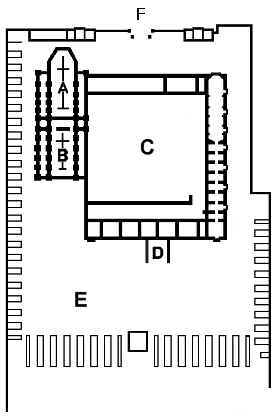

|
"Correvano i primi giorni del giugno 1879 - epoca nella quale io
venni ad occupare la cappellania della Natività di Maria Santissima
in Zivido (parrocchia e pieve di S. Giuliano Milanese), di proprietà
dell'illustrissimo sig. marchese Giacomo Brivio - allorchè mi ebbi
la graditissima visita del venerando ed ora compianto preposto parroco
di S. Giuliano, don Giuseppe Brigola, uomo semplice e virtuoso, quanto
solerte e preciso nel disimpegno di sue parrocchiali mansioni. Intrattenendomi
seco lui in famigliare colloquio, colsi l'opportunità per megli
informarmi intorno agli obblighi inerenti alla mia nuova posizione.
In quell'occasione egli mi parlò di due messe da celebrarsi ogni
anno alla metà di settembre, come da antica consuetudine. Naturalmente
richiesi al simpatico vegliardo quale ne fosse la relativa applicazione,
ma egli altro non seppe rispondermi fuor che, se la memoria nol tradiva,
dovevano essere applicate a suffragio delle anime dei soldati caduti in
una battaglia combattuta secoli addietro nei dintorni.
Da qui la curiosità in me di conoscere quel fatto d'armi e per
diretta conseguenza la risoluzione di farne le corrispettive ricerche".
Così comincia a narrare don Raffaele Inganni nel suo libro "Origini
e vicende della cappella espiatoria francese a Zivido"; ma inizia
anche la meravigliosa avventura del cappellano zividese che alla fine
riscoprirà la storia, il luogo esatto, le vestigia e la sepoltura
di quei grandi che fecero esclamare al Trivulzio: "Non battaglia
d'uomini, ma di Giganti".
Recatosi dal marchese Giacomo Brivio, ottenne di far ricerche nell'archivio
di famiglia e, con grande sorpresa, rinvenne un "importantissimo
documento, redatto da notaio nell'anno 1518, dal quale chiaramente ed
indubbiamente si rilevava l'epoca ed il luogo del combatimento non solo,
ma, ciò che più importava, la fondazione della famosa Cappella
espiatoria coll'annesso convento pei religiosi che la dovevano ufficiare".
Allora fece praticare alcuni scavi nel terreno adiacente la chiesa di
Zivido rinvenendo ben presto, ad una profondità di 60 cm, una gran
quantità di ossami e di teschi. Che fossero i resti dei caduti
della "Battaglia dei Giganti" venne confermato più tardi
da un altro documento del 1606, rinvenuto sempre nell'archivio Brivio.
Questo documento indicava che i caduti erano sepolti in un terreno, con
annessa chiesa, detto "alle vittorie" e che erano stati trasportati
a Zivido, inumati parte nella tomba sotto la chiesa e parte intorno alla
stessa. Il terreno "alle vittorie" è lo stesso dove oggi
sorge il cimitero principale di San Giuliano Milanese.
Nella tragica notte fra il 13 e 14 settembre 1515, quando ancora l'esito
della battaglia si presentava incerto Francesco I re di Francia nonriusciva
a dormire, nell'angoscioso silenzio che avvolgeva il campo di battaglia
a Zivido, e "...alzata l'anima pia al Dio degli eserciti, fece voto
che, se fosse gloriosamente uscito da quel frangente ... avrebbe eretto
sul luogo stesso de' suoi trionfi una cappella espiatoria per l'anima
dei caduti dedicandola alla Regina delle Vittorie".
Come ben sappiamo ne uscì vincitore, anche per merito dell'arrivo
irruento dei veneziani al comando di Bartolomeo d'Alviano che provocò
grande scompiglio nelle file svizzere. Lasciò il campo di battaglia
dove erano caduti oltre 12.000 uomini e tornato in Francia diede le necessarie
disposizioni affichè il voto formulato diventasse realtà.
Il magnifico Sebastiano Ferreris, intendente generale delle finanze in
Lombardia, venne da Francesco I incaricato di iniziare le relative pratiche
per acquistare il terreno dove si era svolta la battaglia. Costui si rivolse
sollecitamente ai Marchesi Brivio, proprietari dei campi, ed il giorno
19 gennaio 1518 stipulò, con atto notarile, l'atto d'acquisto con
il quale "...il signor Carlo Brivio ... cedeva agli agenti del cristianissimo
Re di Francia, Francesco I, duca di Milano, una vigna di centoventicinque
pertiche detta il Santo Eusebio posta nel territorio di Zivido, pieve
di S. Giuliano, Ducato di Milano, nella quale si doveva fabbricare una
chiesa ed un monastero ...".
Ad occupare il grandioso monastero, destinato a tramandare ai posteri
la memoria della munificenza e della pietà del re Francesco I,
furono chiamati i frati Celestini di Francia con l'obbligo di raccogliere
e seppellire nello stesso tutti i caduti della "Battaglia dei Giganti".
Che talo ordine venne eseguito lo dimostra una foto aerea della zona di
qualche tempo fa. Infatti ai lati del viale d'accesso al convento Della
Vittoria, del quale rimangono sulla Via Emilia due pilastri in mattone
ed il cancello, erano visibili numerose ed ordinate fosse sepolcrali.
La tragica sconfitta a Pavia (24 febbraio 1525) di Francesco I; la sua
prigionia prima a Pizzighettone e poi in Spagna; gli errori della dominazione
francese e soprattutto le atrocità del Visconte di Lautrec, governatore
di Milano, resero poco sicura la permanenza dei frati Celestini al monastero
Della Vittoria, i quali "... sfiduciati, rivolsero la loro mente
alla patria lontana. Vissero a malincuore alcun poco ancora in questa
terra ... ma poi ... abbandonarono definitivamente il convento annesso
alla Cappella espiatoria di Zivido, vendendo prima tutto quanto era per
essi alienabile (1532-1533)".
Rimasto così il monastero senza abitatori il Papa Paolo III decise
di erigerlo in bebeficio affidandolo a Diego de Mendoza, il primo di una
serie di personaggi che si avvicendarono sul posto fino a quando San carlo
Borromeo divenne proprietario dell'edificio monastico su disposizione
del Sommo Pontefice regnante.
Scoppiata la peste a Roma (1575) e propagatasi con violenza a Milano e
nel suo contado, San Carlo "pensò di approfittare dello stabile
alle Vittorie di Zivido onde raccogliervi i poveri che stavano rinchiusi
nel recinto o portico di S. Stefano Maggiore a Milano. Concepita questa
idea la mise subito in esecuzione, mandando nel suddetto Monastro più
di trecento poveri".
Cessata la peste nel 1577, San Carlo donò il monastero all'Ospedale
Maggiore di Milano che, impossibilitato a far fronte finanziariamente
alle pesanti riparazioni, decise, a scopo di utilizzarne il materiale,
la demolizione delle due chiese contigue di S. Maria della Vittoria e
di S. Eusebio, dove riposavano ancora le spoglie di molti tra i caduti
nelle due giornate del settembre 1515.
Ma i debiti non diminuivano perciò l'Ospedale Maggiore mise all'asta
il monastero il giorno venerdì 19 settembre 1603. Miglior offerente
fu il marchese Carlo Brivio (discendente diretto dell'omonimo primo venditore)
che lo acquistò per settemila lire imperiali il giorno 8 agosto
1605. Contemporaneamente il Brivio ottenne dal cardinale Federico Borromeo
di acquistare anche l'area su cui sorgevano le due chiese demolite.
L'arcivescovo di Milano impose però che Carlo Brivio eseguisse
le seguenti ingiunzioni: facesse trasportare nel cimitero di S. Maria
in Zivido le ossa dei defunti che riposavano nel terreno già prima
occupato dalla chiesa di S. Maria della Vittoria compresa quella di S.
Eusebio; stabilisse la somma di centoquindici lire imperiali e con il
relativo frutto facesse celebrare ogni anno, nella medesima chiesa di
Zivido, un ufficio con messe a suffragio di quei defunti (le famose messe
che incuriosirono secoli dopo il cappellano di Zivido don Raffaele Inganni).
Rientrati così nel possesso Brivio i beni della Vittoria, non era
immaginabile che si conservasse il monastero ormai in pessime condizioni
e da qualche tempo abitazione dei contadini del luogo, perciò fu
definitivamente demolito e l'area destinata ad uso agricolo (1639).
Questo monumento scomparve e per più di due secoli fu dimenticato
ed il silenzio interrotto ogni tanto dalla sbiadita tradizione orale conservata
dai più vecchi del luogo.
Nel 1886 don Raffaele Inganni si recò nei campi detti della Vittoria
(ora occupati dal cimitero di S. Giuliano Milanese) e notò, lungo
un fossato che serve per l'irrigazione, alcune tracce di fondamanta. Prese
i necessari accordi con i fratelli Oriani, fittabili, per potervi effettuare
gli scavi ed attese il momento propizio che giunse alla metà del
mese di novembre del 1886.
Con l'aiuto di quattro volonterosi e seguendo le linee tracciate lungo
il fossato mise a nudo tutto il lato di mezzogiorno dell'antico monastero
che risultò essere lungo 71 metri. Il lavoro proseguì fino
alla fine di gennaio 1887 quando furono riportate alla luce le fondamenta
sia del monastero sia delle due chiese attigue.
L'importanza di questa scoperta era talmente evidente che vi fu un accorrere
di illustri studiosi e giunse anche il prof. Pompeo Castelfranco, regio
ispettore degli scavi e monumenti del Circondario di Milano, per eseguire
l'opportuno reseconto d'ufficio.
Le fondamenta dell'antico monastero si presentarono come un grandioso
quadrilatero due lati del quale misurano 71 m. di lunghezza (quello nord
e sud) e due misurano 83,50 m. (quello est ed ovest). Inoltre nella muraglia
ed est, in mattoni e dello spessore di 1,50 m., erano visibili le parti
inferiori dei finestroni che davano luce ai sotterranei.
Le fondamenta poi della Cappella espiatoria di S. Maria indicavano tre
navate: due laterali larghe ciscuna 3,60 m. ed una centrale larga 11,20
m. ed una lunghezza complessiva di 29 m. circa.
Quelle di S. Eusebio, spesse 2,30 m. indicano l'esistenza di un coro ad
angoli ottusi, che la lunghezza della chiesa e di 33 m. e che il materiale
usato è differente per qualità essendo la superficie delle
fondamenta coperta da uno strato di calce cristallizzata.
Quale era l'aspetto del monastero e delle due chiese ancora oggi non è
possibile saperlo; si può a ben ragione supporre fosse imponente
ed elegante osservando due colonne in granito rimaste e collocate a sostegno
di un portico in una casa nobiliare di Milano; più alcuni pezzi
in pietra con modanature architettoniche che svelano la loro antica pertinenza
ad una delle due chiese distrutte.
L'opera del cappellano zividese don Raffaele Inganni, nella riscoperta
delle memorie e del luogo dove si svolse la famosa "Battaglia dei
Giganti" o "di Marignano", venne ampiamente riconosciuta
e gli valse il titolo di Accademico di Francia.
Purtroppo ben presto i campi della Vittoria tornarono alla loro destinazione
agricola e di queste fondamanta, ancora una volta, si perse la memoria.
Qualche decennio dopo sulla medesima area venne edificato il nuovo cimitero
di San Giuliano Milanese. Il destino ha voluto che si perpetuasse la sacralità
del luogo; che ai corpi dei Giganti caduti e sepolti cinque secoli orsono
venissero a sostituirsi, nei decenni fino ad oggi, i nostri concittadini
defunti.
Noi vogliamo ricordarli, così come vogliamo ricordare e far conoscere
il grandioso monastero frutto della pietà di un re che, non solo
onorò tutti i caduti senza distinzione di patria, ma anche i vivi
affranti per la sconfitta che lasciarono il campo di battaglia e tornarono
alle loro case in Svizzera. Almeno questi impararono che la guerra è
solo dolore e distruzione e non vollero più praticarla.
Una targa rimarrà per sempre ad indicare il monastro dei Giganti
"alle Vittorie" con la segreta speranza che un giorno sia possibile
riportare alla luce le sue fondamenta.
Caro amico e cara amica che, in ginocchio, sulla tomba del familiare defunto
accendi un lumino o deponi un fiore ricordati di offrirlo anche a quei
tantissimi antichi uomini che qui morirono specchiandosi nelle acque limpide
dei fossati, tra i fiori autunnali, guardando nell'ultimo istante il sole
calante o la notte stellata di questa nostra bella Italia tanto desiderata.
|  |
 |
|
il
monastero segreto del Re di Francia Francesco I a San Giuliano
Milanese
|
|
A
antica e preesistente chiesa di S.Eusebio
B
cappella espiatoria francese di S. Maria della Vittoria
C
monastero dei frati Celestini di Francia
D
viale d’accesso al monastero dalla via Emilia dove sono visibili
i due pilastri ed il cancello. Ai lati del viale vi erano altre
fosse sepolcrali
E
parte dell’attuale cimitero cittadino di San Giuliano Milanese
F
ingresso principale del cimitero cittadino di San Giuliano Milanese
|
|
|
San Giuliano Milanese (MI)
15 settembre 2001
|